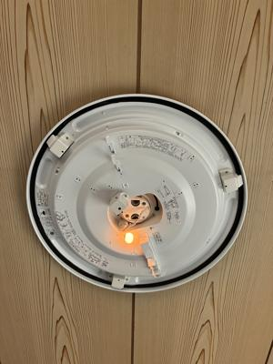
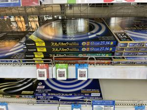

うるがいの話 ある日
最新: 蛍光ランプ本体の変換【うるがいの話 ある日】とは 一日だけのプログです
『うるがいの話』の最新一日だけのプログで、通信料が少なく経済的だ。カニの画像をクリックすると全ての日付が載る『うるがいの話』サイトを表示します
|
|
【うるがいの話】 うるがい(ｳﾙｶﾞｲ urugai)とは、『もずくがに』の名前でとても大きくなります。 |
|---|---|
|
|
【カミマヤーの話】 猫のことを方言でマヤーといいます。カミマヤー（kamimayaa）とは、神の猫のことです。 |
|
【たながぁの音楽】 たながぁ（ﾀﾅｶﾞｰ tanagaa）とは手長えびのことで、何種類かあり大きいのは車 エビぐらいになります。 |

|
【ぶながぁの話】 ぶながぁ(ﾌﾞﾅｶﾞｰ bunagaa)とは、赤い髪の毛、赤い身体、そして身長は１ｍ２０ｃｍ ぐらい、川の蟹を食べているの目撃された。場所は沖縄県国頭郡大宜味村のと ある村僕の隣近所に住んでいる爺さんから、聞いた話です。 |
|
|
【ギーマの話】 ギーマ(giima)とは、山原の里山に咲くスズランに似た、 花を付けます。実は食べられます、 気が付くと口の周りが紫になっています。 |
2026年10月05日 (月）蛍光ランプ本体の変換
16:07
消えた蛍光灯は、蛍光灯を外し換えれば済むかと昨日まで思っ
てました。が、灯りの消え方が蛍光灯でなく装置そのものでは
ないかと、座禅しているときフと考えが出てきました。蛍光灯
も３千円以上もするので、買って点かなかったらマズイ、家に
ある蛍光灯で同じ、蛍光灯があれば外して点くか試してみよう
と、家にある他の５つの蛍光灯を調べました。ない、かなり前
にストックしている新品の蛍光ランプも開けて調べました。な
んと！、取り外し型の蛍光灯はなく、全てＬＥＤだった。（２
０２７年末をもって一般用蛍光灯の製造・輸出入が禁止されま
す。）思い出しました、昔、家電で室内蛍光灯を調べたら、全
てＬＥＤ型しか販売していない、だから万が一の場合を考えて
蛍光ランプを一つ買って置いたのだった。いつ購入したものか
、記録がない、ネットで調べると２０１４年１２月の発売開始
だから・・恐らく１０年前かな。壊れてしまった、放電ランプ
だけ点く。

お昼、別件でサンエーに行く、ついでエディオンで蛍光灯を探
す
TOSHIBAネオスリムプライドⅡFHC34ED-PDZ 34ワット27ワット

ありませんでした。良かったスットクが活きて。それにしても
電球高い、類似の蛍光灯は５，４４０円だった。ＬＥＤは６千
円からあった。
話しは変わるが、蛍光灯を替えているときコドモから、電話が
『軽自動のカギある？』、軽自動の鍵がある自家用車を友達が
持っているため、仕事に生けず困っているとのこと。またかい
アパートへ鍵を届ける。前にも、糸満の職場で、自家用車の鍵
を便器に落としてしまったため、糸満までカギを届けに行った
。一度あることは、２度ある。軽自動の鍵を届けたあと、無事
ＬＥＤの蛍光灯の設置を終える。